Synthetische, vergleichbare Empty-/Populated-Daten. Identische CSS-Viewports, DPR 1. Original-HTML unverändert; Empty-Referenz im Browser aus dem Prototyp erzeugt, ohne erfundene Beziehungen. Bilder anklicken für Originalgröße.
Prüfbericht und bewusste kanonische Unterschiede
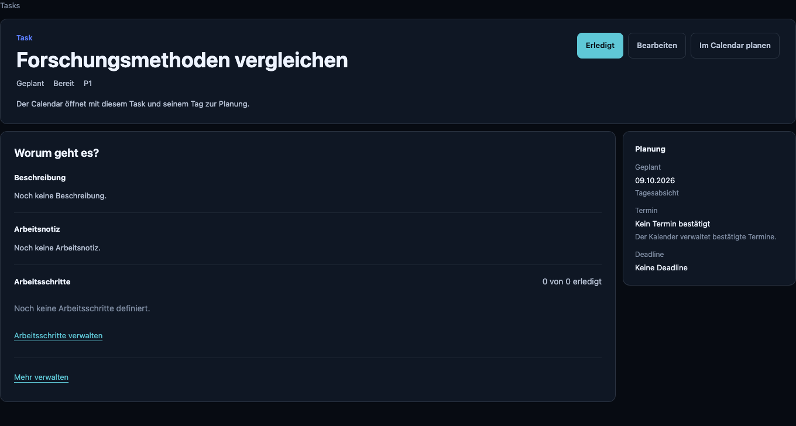
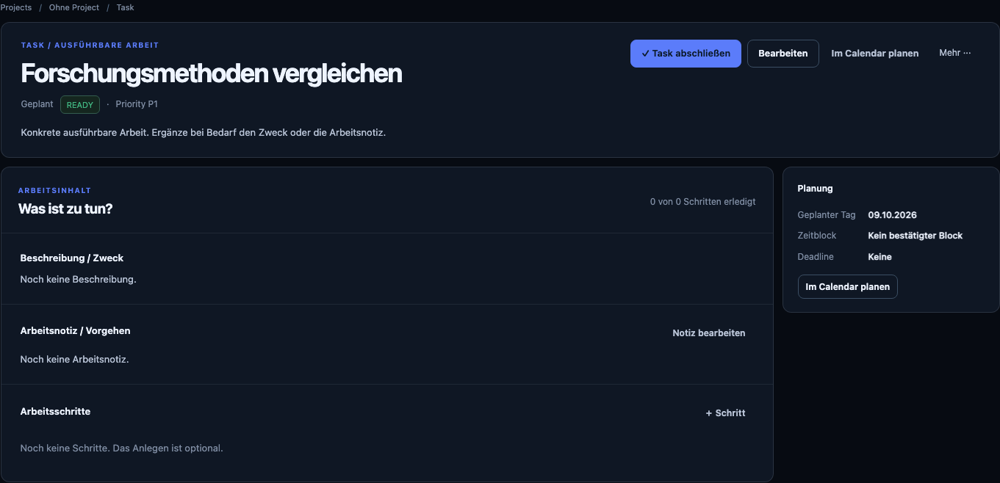
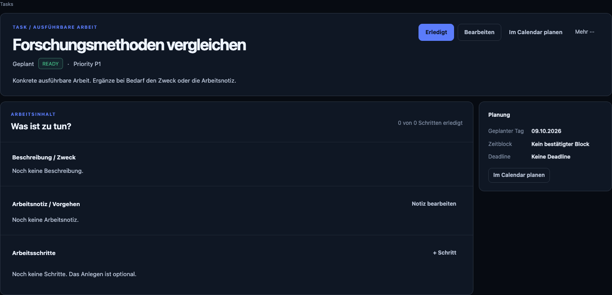
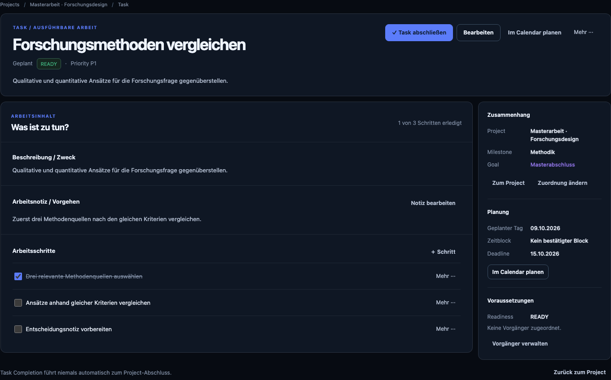
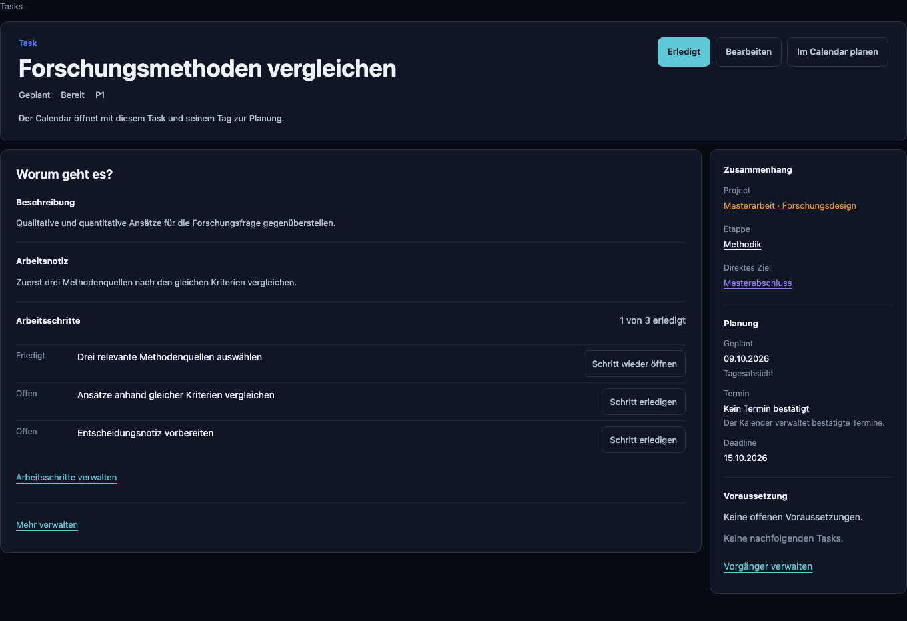
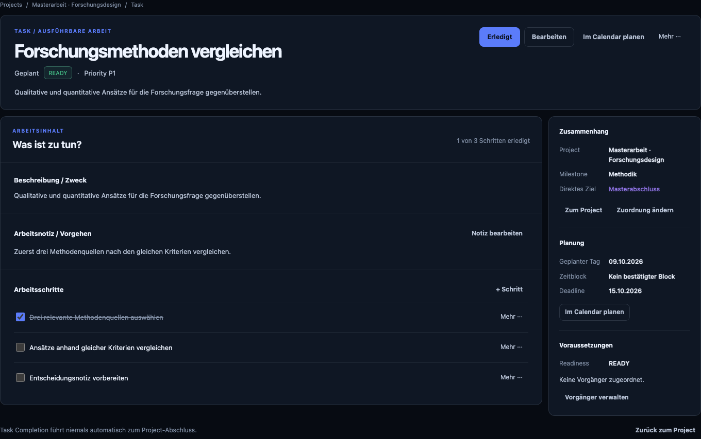
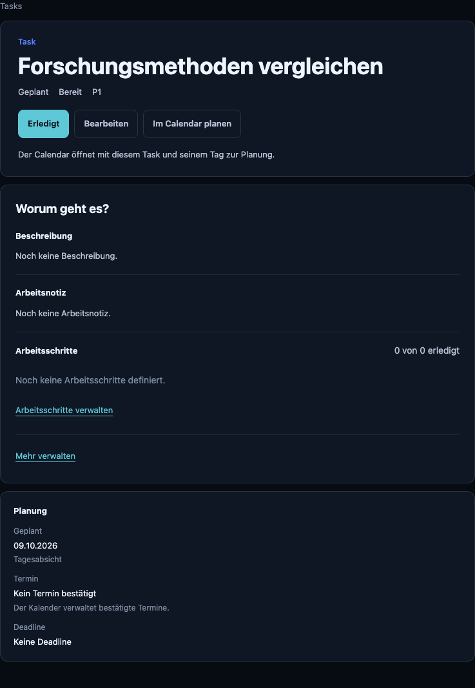
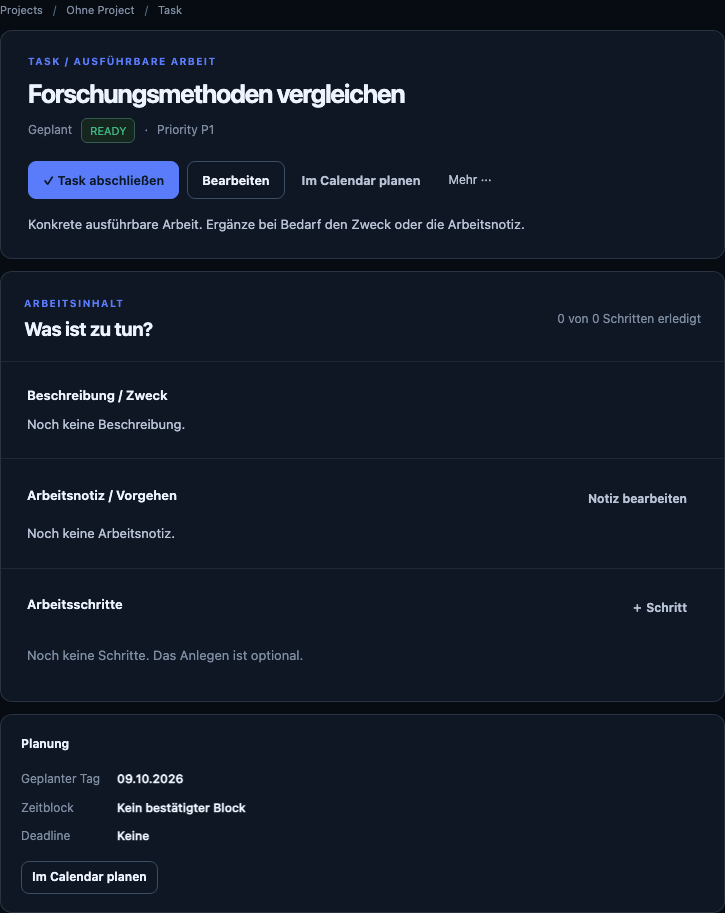
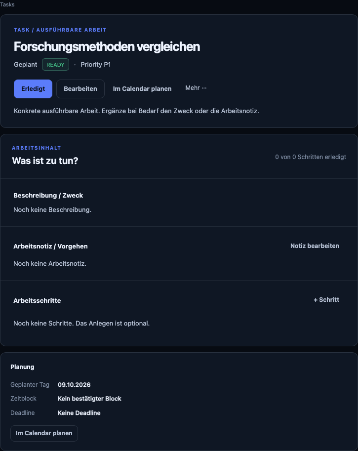
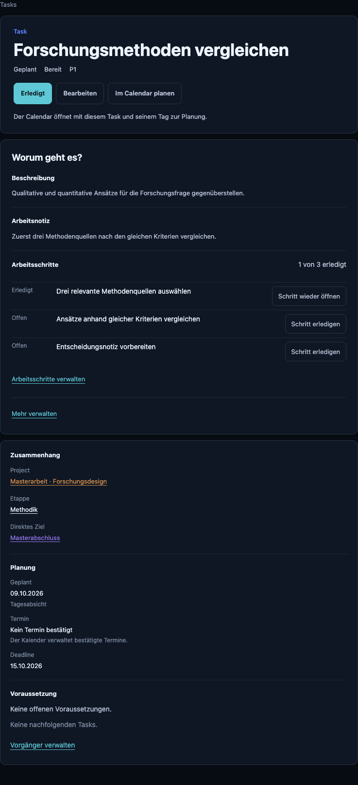
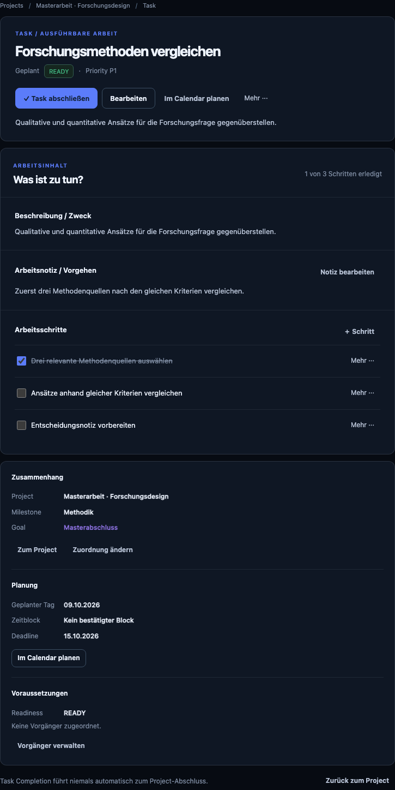
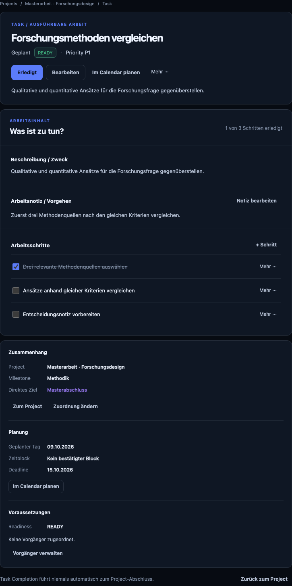
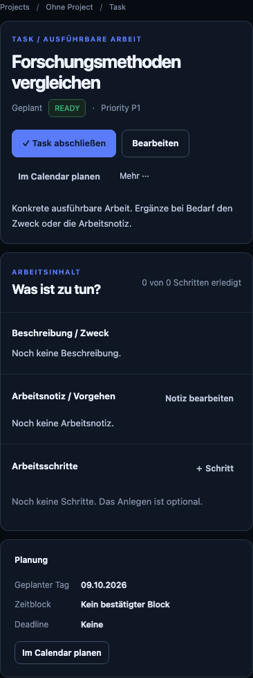
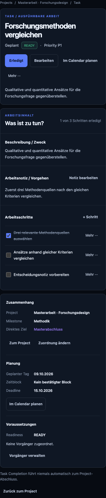